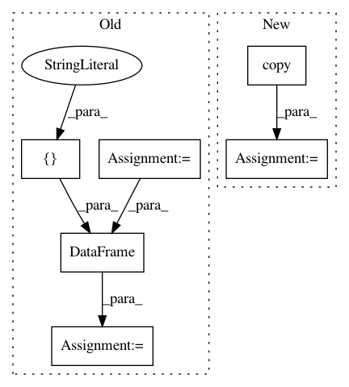

c899e6e816306956208664dcabd11e5e84e4bcb7,factor_analyzer/factor_analyzer.py,FactorAnalyzer,get_factor_variance,#FactorAnalyzer#,897
Before Change
variance = loadings.sum(axis=0)
// calculate proportional variance
proportional_variance = variance / n_rows
// calculate cumulative variance
cumulative_variance = proportional_variance.cumsum(axis=0)
// package variance info
variance_info = pd.DataFrame([variance,
proportional_variance,
cumulative_variance],
index=["SS Loadings",
"Proportion Var",
"Cumulative Var"])
return variance_info
def get_scores(self,
After Change
// meets all of our expected criteria
check_is_fitted(self, "loadings_")
loadings = self.loadings_.copy()
return self._get_factor_variance(loadings)
In pattern: SUPERPATTERN
Frequency: 3
Non-data size: 6
Instances
Project Name: EducationalTestingService/factor_analyzer
Commit Name: c899e6e816306956208664dcabd11e5e84e4bcb7
Time: 2019-04-02
Author: jbiggs@ets.org
File Name: factor_analyzer/factor_analyzer.py
Class Name: FactorAnalyzer
Method Name: get_factor_variance
Project Name: EducationalTestingService/factor_analyzer
Commit Name: c899e6e816306956208664dcabd11e5e84e4bcb7
Time: 2019-04-02
Author: jbiggs@ets.org
File Name: factor_analyzer/factor_analyzer.py
Class Name: FactorAnalyzer
Method Name: get_communalities
Project Name: bashtage/linearmodels
Commit Name: 5d8b81e16143d6eea9e86a586fe737854c03c772
Time: 2017-04-07
Author: kevin.k.sheppard@gmail.com
File Name: linearmodels/tests/panel/test_pooled_ols.py
Class Name:
Method Name: test_two_way_clustering